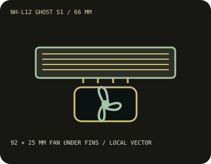

[ INDIVIDUAL COMPONENT // COOLING ]
Noctua NH-L12 Ghost S1 Edition
A 66 mm low-profile cooler designed around the Louqe Ghost S1 envelope, with a 92 × 25 mm NF-B9 PWM fan beneath its fin stack.

IDENTIFICATION: This is the NH-L12 Ghost S1 Edition, not the original NH-L12 or NH-L12S. Verify included mounting hardware and compatibility against the exact cooler revision.
Manufacturer specifications
| Overall dimensions | 128 × 150 × 66 mm with NF-B9 PWM fan. Published mass is approximately 500 g with fan and 410 g without fan. |
|---|---|
| Fan / thermal limits | NF-B9 PWM, 92 × 92 × 25 mm; up to 1,600 RPM, 64.3 m³/h airflow, 1.61 mm H₂O and 17.6 dB(A). No radiator. NSPR 78 is Noctua's comparative performance rating, not a wattage/TDP limit; use the model-specific CPU compatibility list. |
| Mounting kit and sockets | SecuFirm2 cooler with Intel LGA1851/1700/1200/115x and LGA2066/2011, plus AMD AM5/AM4 support when the appropriate compatible mounting kit is used. Original box hardware varies by production date; newer sockets may require an optional upgrade bracket. Check the exact CPU in Noctua's compatibility center and confirm the correct kit is included. AM4/earlier AMD mounting may require a backplate. |
| Clearance caveats | Allow 66 mm height and a 128 × 150 mm footprint. Its original target was the Louqe Ghost S1; fitting another case requires independent height and motherboard checks. Fan-under-heatsink design allows modules up to the published 48 mm RAM envelope, subject to board clearance data. |
Safe installation and maintenance
Mount using only the model's SecuFirm2 parts and the official instructions. The Ghost S1 is a clearance target, not a universal case compatibility promise. Check CPU, motherboard, memory, and enclosure against Noctua's current compatibility lists before purchase.
- Do not substitute the taller NH-L12S or original NH-L12 mounting/fan configurations.
- Disconnect power before service, and verify that the fan and cable do not touch memory or case panels.
Manufacturer sources
- Noctua — NH-L12 Ghost S1 Edition specificationsDimensions, fan performance, weight, materials, and NSPR.
- Noctua — NH-L12 Ghost S1 Edition product overviewManufacturer identification and intended-fit details.
- Noctua — NH-L12 Ghost S1 Edition CPU compatibilityCheck current socket and CPU support before installation.
- Noctua — NH-L12 Ghost S1 Edition manual (PDF)Manufacturer assembly and socket-specific mounting instructions.
Static catalog reference only; confirm exact kit and system clearance before use.